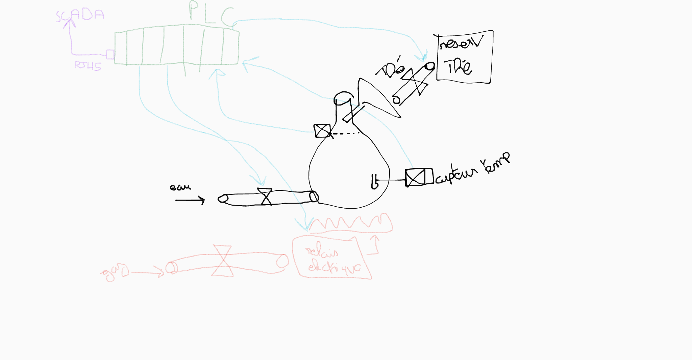
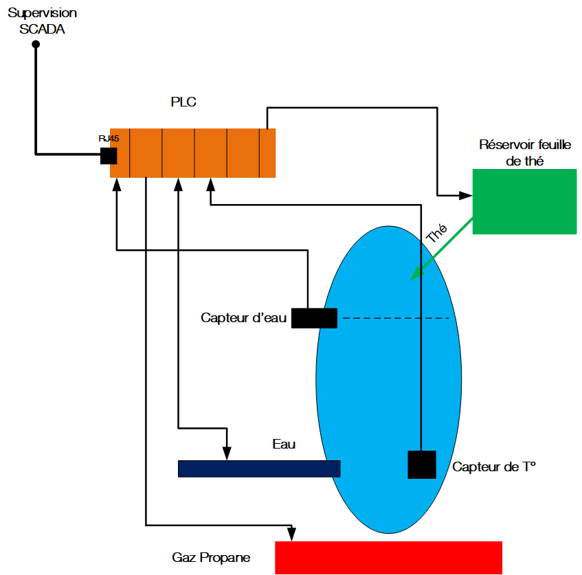
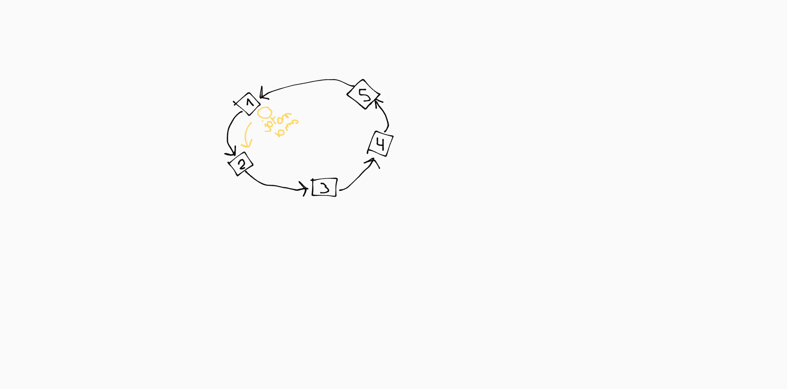
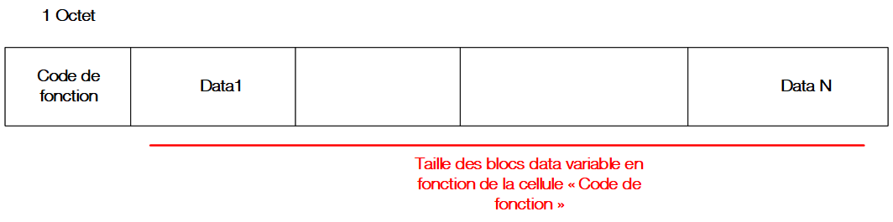
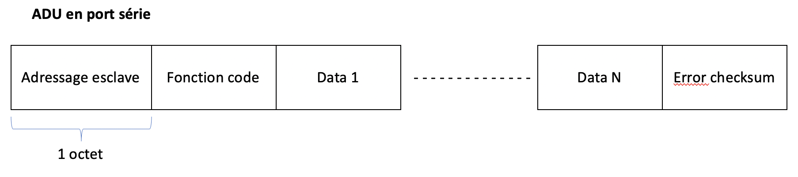
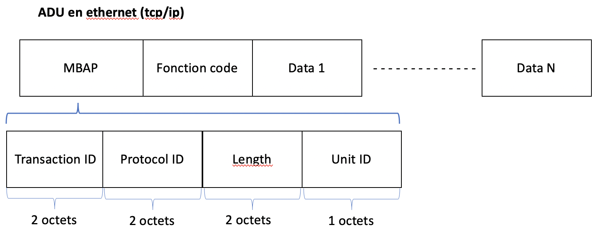
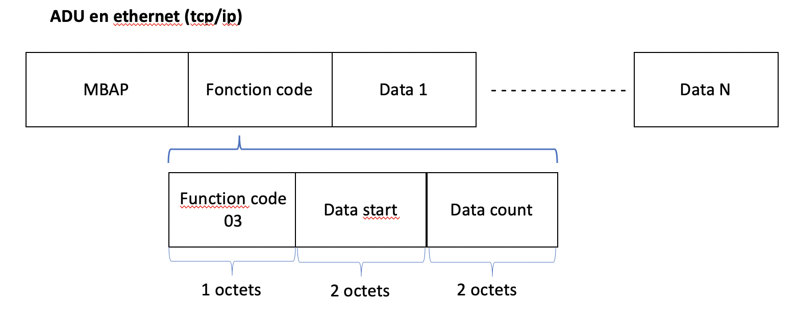

Réseaux industriels
Presentation
Voici une usine à Thé, tous les composants sont contrôlés par un controleur


-
Le PLC (boitier de commande), gère les capteurs (actionneurs) et les moteurs.
-
Par la suite on a connecté c'est boitier de commande à un poste de supervision (SCADA) pour gérer plusieurs systèmes industriels à distances.
-
Un système de contrôle SCADA permet de recevoir des données depuis les boitier de commande, mais aussi les contrôler ! En piratant le PC de supervision, on peut contrôler l'ensemble des réseaux industriels.
-
Tous ces composants ont des firmware, très peu mis à jour. => STUXNET
Les Bus
Machine outil (pilotage)(machine autonome)
- Bus capteur : ASI, Seriplex
- Bus actionneur : interbus
- Bus de terrain (device bus): Modbus, interbus-S, profibus, device net


Machine (pilotage et/ou process) => machine discute avec PLC ou SCADA
- Bus fieldbus (bus locaux), Flipway, profibus, FMS
pilotage des processus (SCADA)
- Ethernet, MMS
Bus entre cartes electroniques et une machine
-
Bus I2C : interconnection des cartes electroniques entre elles, ou entre composants sur une même carte électronique.
-
Bus CAN : relier 2 cartes electronique entre elles (< 1km)
-
Bus D2B : < 100m très utile (enciennement) en domotique.
Contraintes industrielles
- Determinisme : c'est quand le comportement (notion de temps) des sorties est totalement prévisible en fonction des valeurs des entrées.
Dans les usines il est important de réaction des équipements.
Ex : Le bouton d'arrêt d'urgence ne peut être gérer par ethernet (best effort), il faut que quand le bouton soit présser, tout s'arrête le plus rapidement possible et de façon systématique !
-
Prévisibilité : On sait de source sûr comment mon système se comporte en fonction des entrées/sorties.
-
Urgence : priorise le traitement des urgences en fonction de leur gravités.
-
Contraintes environnementales : corrosivité, explosivité, etc
-
Token ring : Chacun a la parole pendant un temps, si un tombe en panne tout se casse la gueulle. Débit faible. 
Presentation des Bus
Modbus
-
Créé en 1979, bus et protocole de communication sur le modèle maître/esclave.
- RS232 (1 maître (actif ou passif), 115 kb/s, 15 mètres)
- RS422 (plus utilisé)
- RS485 (rétrocompatible RS232)
-
Basé sur un modèle requête / réponse
- structuré en PDU (Protocol Data Unit) identique en serie ou ethernet. et en ADU (Application Data Unit)


Adresse escalve null => Broadcast

MBAP : - Transaction ID : (2 octets, encodé en ASCII), défini par le client (esclave), réutilisé par le serveur pour parler au client. - Protocol ID : (2 octets), toujours à 0000. - Length : (2 octets), longueur du message qui va suivre (octets) - Unit ID : (2 octets), numéro (adresse) de l'esclave
